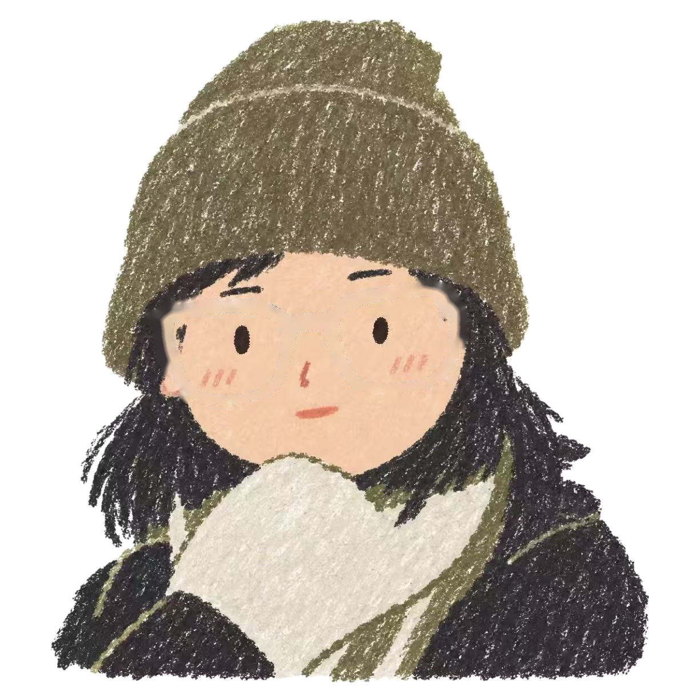

一张画，拆成可以活动的图层。
保留你的蜡笔头像，拆出眼镜和眼睛，再用附近像素修补被遮住的脸。没有使用生图工具，也没有重新绘制人物。

首页会让头部轻微偏转、眼睛跟随，并在眼镜被拿走时出现疑惑反馈。这是单张图的拆层动作；抬头、低头的精细连续变形，需要后续补画稿。
保留你的蜡笔头像，拆出眼镜和眼睛，再用附近像素修补被遮住的脸。没有使用生图工具，也没有重新绘制人物。

首页会让头部轻微偏转、眼睛跟随，并在眼镜被拿走时出现疑惑反馈。这是单张图的拆层动作；抬头、低头的精细连续变形，需要后续补画稿。